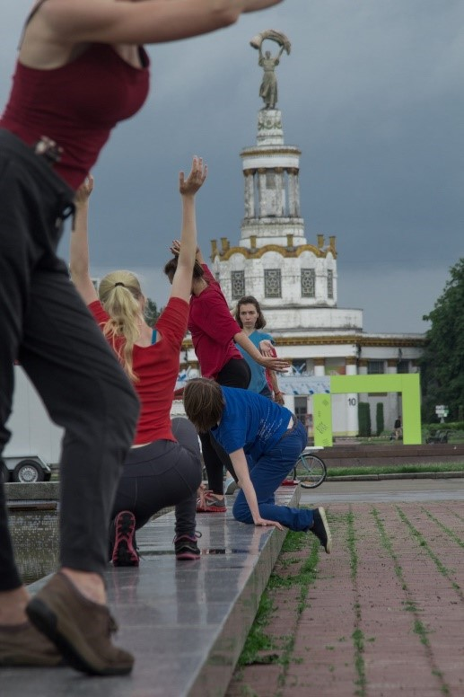
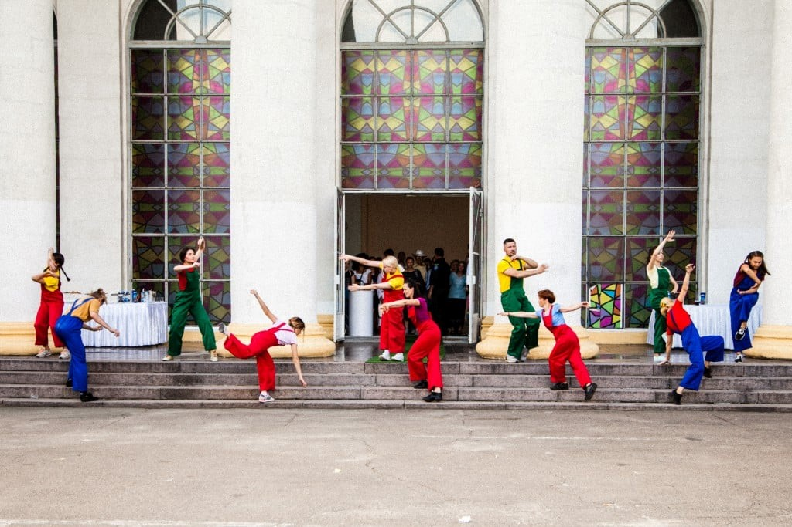
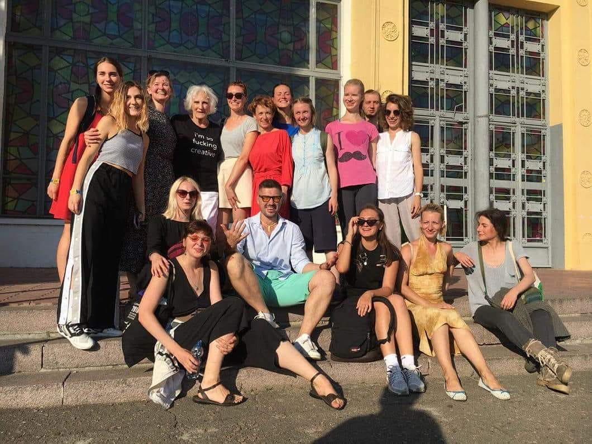
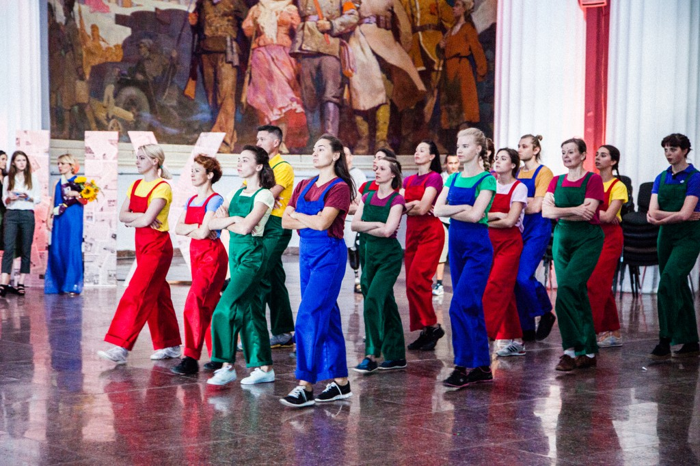
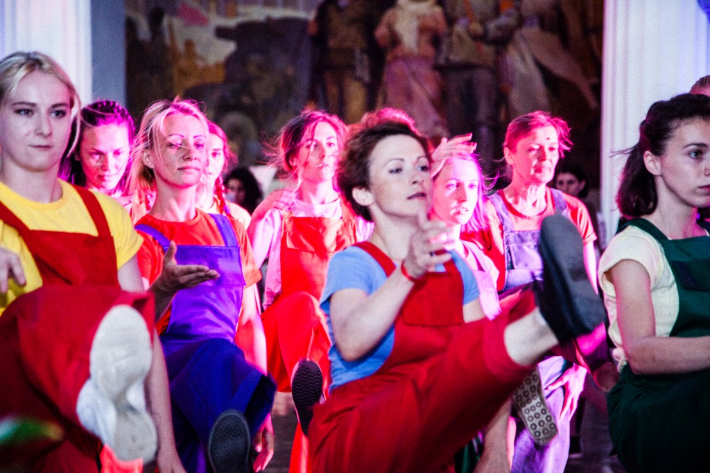
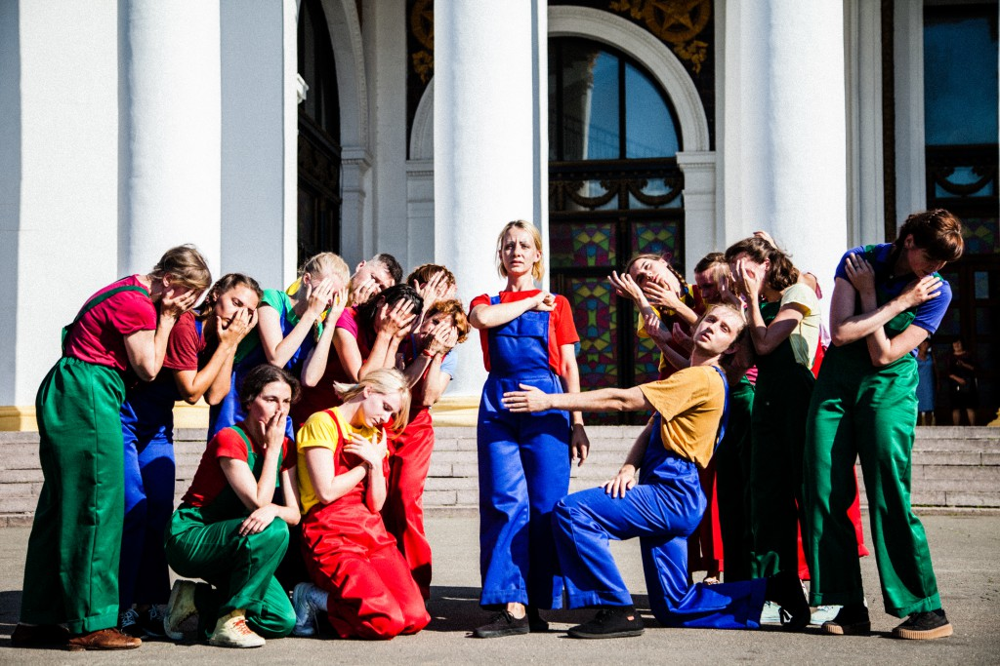
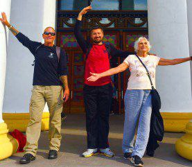

60 MOVES with FUTURE GAZE (Ukraina-USA, 2018)
Projekt współpracy Maidy Withers (USA) і Black O!Range DP (UA)

Maida Withers, znana choreografka z Waszyngtonu i Anton Ovchinnikov,
założyciel ZelyonkaFest w Kijowie, współtworzyli "60 MOVES with FUTURE GAZE", spektakl site-specific z
udziałem 17 ukraińskich tancerzy współczesnych i muzyką elektroniczną na żywo skomponowaną i wykonaną
przez Steve’a Hilmy’ego, USA, w ramach obchodów 60. rocznicy GALI Historycznego Centrum Wystawiennictwa
Narodowego (Expo) w Kijowie na Ukrainie.
"60 MOVES with FUTURE GAZE" bada związek między architekturą a
ludzkim ciałem, aby lepiej zrozumieć, jak architektura wpływa na naszą tożsamość i wzorce zachowań.
Co czujemy dziś, będąc otoczeni ideologią przeszłości - przeszłości głęboko ucieleśnionej w architekturze?
I kim jesteśmy MY - ludzie, którzy żyli w czasach dramatycznych zmian, którzy wciąż są w trakcie procesu
samoidentyfikacji - rozrzucania ruin przeszłości na rzecz przyszłości.





